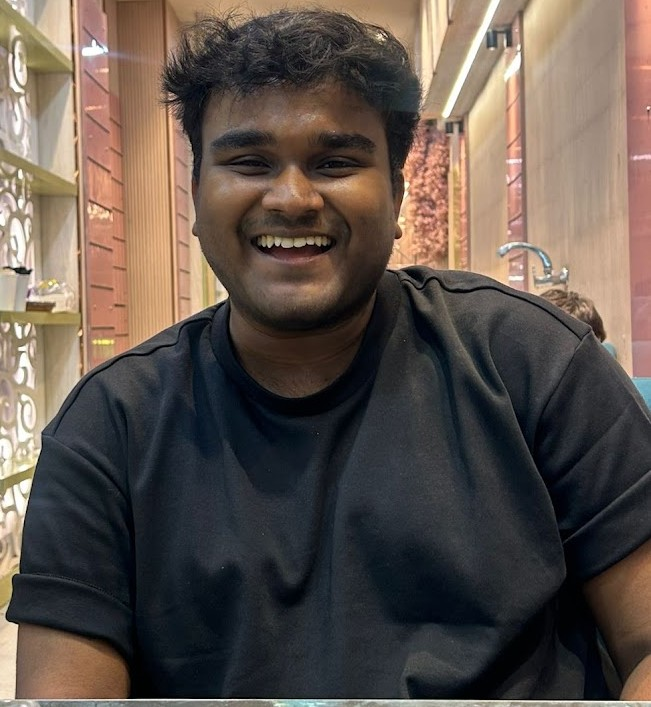

About
I am an incoming Bachelor's thesis student at
MPI-SWS.
I study Computer Science and Economics at BITS Pilani, and work on
computer vision and multimodal deep learning, with an interest in
LLMs and VLMs.

Publications
05 papersA2Z-10M+: Geometric Deep Learning with A-to-Z BRep Annotations for AI-Assisted CAD Modeling and Reverse Engineering
DenVisCoM: Dense Vision Correspondence Mamba for Efficient and Real-time Optical Flow and Stereo Estimation
DensePercept-NCSSD: Vision Mamba towards Real-time Dense Visual Perception with Non-Causal State Space Duality
ViM-Disparity: Bridging the Gap of Speed, Accuracy and Memory for Disparity Map Generation
Contact
Feel free to reach out if you'd like to talk about research, computer vision, multimodal learning, or potential collaborations.
tushar.anand2010@gmail.com